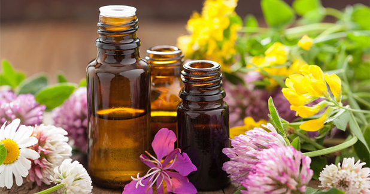

Meaning of Aromatherapy
Aromatherapy is a holistic healing treatment that uses natural plant extracts to promote health and well-being. Sometimes it’s called essential oil therapy. Aromatherapy uses aromatic essential oils medicinally to improve the health of the body, mind, and spirit. It enhances both physical and emotional health. There is also other ways such as using these structures via energy and massage due to take spirtual benefits for mankind.
The Most Popular Herbals For Aromatherapy
Lavender essential oil is used as an antiseptic for minor cuts and burns and to enhance relaxation and sleep. It is said to relieve headache and migraine symptoms. Lemon essential oil is said to improve moodTrusted Source, and to help relieve the symptoms of stress and depression. Tea tree essential oil is said to haveTrusted Source antimicrobial, antiseptic, and disinfectant qualities. It is commonly used in shampoos and skin care products, to treat acne, burns, and bites. It features in mouth rinses but it should never be swallowed, as it is toxic. Thyme essential oil is said to help reduce fatigue, nervousness, and stress. Bergamot essential oil is said to be useful for the urinary tract and digestive tract. When combined with eucalyptus oil it may help relieve skin problems, including those caused by stress and chicken pox.